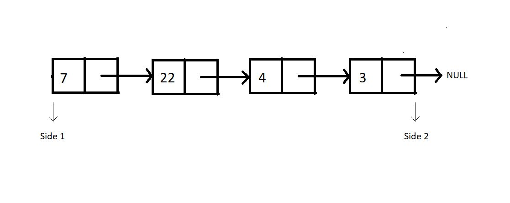
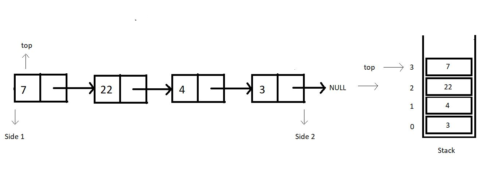

Earlier before, whenever we discussed stacks, we used arrays. We saw how good an array is while implementing stacks using them. We saw it follows constant time complexity for each of the operations we discussed. Today, we’ll begin implementing stacks using a different data structure, linked lists.
Linked-lists is surely not a new term for you all. We have come here only after discussing all the basics. So, if you haven’t come across the linked lists, you must have skipped them. I highly recommend you all to go through the videos discussing them in the playlist. Assuming you are done, we’ll proceed.
Implementing stacks using linked lists:
We can now consider a singly linked list. Follow the illustration below.

Consider this linked list functioning as a stack. And as you know, we have two sides of a linked list, one the head, and the other pointing to NULL. Which side do you feel should we consider as the top of the stack, where we push and pop from? After following me all the way through here, you would say the head side.
And why the head side, that is side 1?
Because that’s the head node of the linked list, and insertion and deletion of a node at head happens to function in a constant time complexity, O(1). Whereas inserting or deleting a node at the last position takes a linear time complexity, O(n).
So that stack equivalent of the above illustrated linked list looks something like this:

Let’s revise how we used to define a struct Node in linked lists. We had a struct, and two structure members, data and a struct Node pointer to store the address of the next node.
Code Snippet 1: Structure of a Node in a Linked List
When is our stack empty or full?
Stacks when implemented with linked lists never get full. We can always add a node to it. There is no limit on the number of nodes a linked list can contain until we have some space in heap memory. Whereas stacks become empty when there is no node in the linked list, hence when the top equals to NULL.
One change I would like to implement before we proceed; the head node we had in linked lists, is the top for our stacks now. So, from now on, the head node will be referred to as the top node.
Even though a stack-linked list has no upper limit to its size, you can always set a custom size for it.
These interpretations will help us implement the operations, isEmpty and isFull. We have made our path easy for that. We’ll also discuss the conditions when the heap memory gets full. You already know the basic operations that we will have. I encourage you all to try to put these operations into practice on your own. Tell me if you could. You will not be left in disguise, but with a better understanding of things. Believe in me and practice a lot.
I appreciate your support throughout. I hope you enjoyed the tutorial. If you genuinely appreciate my work, please let your friends know about this course too. If you haven’t checked out the whole playlist yet, move on to codewithharry.com or my YouTube channel to access it. See you all in the next tutorial where we’ll start implementing stacks using linked lists. Till then keep coding.
stackTop, stackBottom & Time Complexity of Operations in Stack Using Arrays | CodeWithHarry